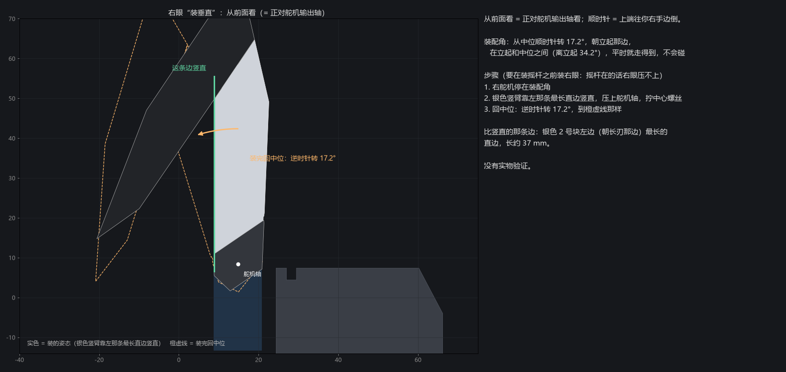
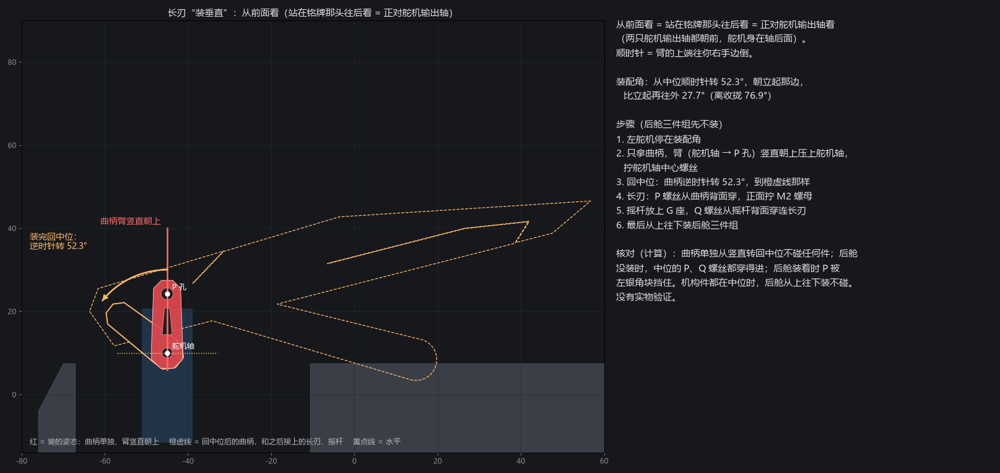

停机坪：烧录和装曲柄
一共三步：网页烧录 → 插电装曲柄和右眼 → 按一下。不用装软件，不用调试，不用连 WiFi。非 ASUS / ROG 官方产品。
1烧录
曲柄、右眼、长刃、摇杆都先不要装。用电脑上的 Chrome 或 Edge 打开本页：
https://chenwilliam1986-bot.github.io/helipad-flasher/
用 USB 数据线把主控板（ESP32-C3 SuperMini）接到电脑，只接主控板，充电头先不插。点下面的按钮，在弹出的列表里选带 “USB JTAG” 或 “COM” 字样的那一项，点“连接”，再点“安装”，等一两分钟。
看到安装完成就拔掉数据线。插着电脑时舵机不会动，小蓝灯两下两下地闪，是正常的。
如果安装时问要不要“擦除设备”（Erase device）：第一次烧选不选都行。零件已经装好以后重烧，不要勾，否则会回到第 2 步的装配流程。
2插充电头，装右眼和曲柄
插上 5V 3A 充电头。两只舵机各转一下，停住不动，小蓝灯快闪。这时舵机在使劲保持角度，趁它停着把零件压上去：
先装右眼：银色那块最长的直边（图里绿线）摆成竖直，压上右舵机的轴，拧上中心螺丝。

再装曲柄：只拿曲柄一个件，“轴孔 → P 孔”这条臂（图里红线）竖直朝上，压上左舵机的轴，拧上中心螺丝。

两张图都是从前面看（正对舵机的轴）。差一点点没关系，摆到最接近竖直的那一齿就行。图里右边的小字是设计时的记录，不用看。
3按一下翘板，装完
按一下翘板（或者小板上的 BOOT 键）。两只舵机转回中间位置、松劲，灯带亮起来，就装完了。
接着把长刃和摇杆装上（P、Q 两颗螺丝），再装后舱。以后不会再进这个装配流程。
平时怎么用
| 你做什么 | 它做什么 |
|---|---|
| 放上鼠标 | 约 1 秒后灯灭、收拢 |
| 拿起鼠标 | 立起、亮灯 |
| 立起时短按一下翘板 | 开 / 关灯 |
| 立起时连按两下翘板 | 换一种灯效（共 6 种，会记住） |
出了状况
| 情况 | 怎么办 |
|---|---|
| 点按钮后列表里没有设备，或者连不上 | 拔线 → 按住小板上的 BOOT 键 → 插线 → 松开，再点一次按钮。还不行就换数据线（有的线只能充电） |
| 舵机在动时要碰到东西、嗡嗡响 | 按 BOOT 键，两只立刻松劲。重新插电恢复 |
| 零件装歪了，想重装 | 按住 BOOT 键 5 秒到小蓝灯快闪 → 拔电 → 把曲柄和右眼拆下来 → 重新插电，从第 2 步再来 |
说明
这是个人原型的固件，参数按作者的一台样机写死（长刃立起角、灯带 14 / 20 / 118 颗）。动作和灯效的程序在样机上跑过；这个一键版还没在第二台机器上验证。源码：github.com/chenwilliam1986-bot/helipad-flasher